CONSULTA A NUESTROS EXPERTOS
HORÓSCOPO MENSUAL GRATIS
Descubre lo que el destino tiene reservado para ti este mes con nuestro horóscopo mensual gratuito. En nuestra página web, te ofrecemos predicciones precisas y personalizadas para cada signo del zodiaco, brindándote una guía invaluable para enfrentar los desafíos y aprovechar al máximo las oportunidades que se presenten en tu camino. No te pierdas la oportunidad de obtener una visión clara de tu futuro y tomar decisiones informadas para alcanzar tus metas. ¡Consulta tu horóscopo mensual ahora mismo y déjanos ser tu brújula en el viaje de la vida!
Selecciona tu signo del zodiaco


 



Escribe tu email para recibir la lectura de tu horóscopo
¿Qué es el horoscopo mensual?
El horóscopo mensual es una herramienta invaluable para aquellos que buscan comprender mejor las energías cósmicas que influyen en sus vidas. Este recurso ofrece una visión general de las tendencias astrológicas y los eventos planetarios que pueden afectar a cada signo del zodiaco durante el mes en curso. Desde cambios en el ámbito laboral hasta oportunidades en el amor, el horóscopo mensual proporciona orientación sobre cómo aprovechar al máximo las influencias celestiales y cómo navegar por los desafíos que puedan surgir.
Cada signo del zodiaco tiene su propio horóscopo mensual, adaptado a las características únicas de su personalidad y circunstancias individuales. Estas predicciones astrológicas se basan en la posición de los planetas en el momento del nacimiento de cada persona, así como en los tránsitos planetarios que ocurren durante el mes en cuestión. Al consultar regularmente su horóscopo mensual, los individuos pueden obtener una mayor comprensión de sí mismos, así como una guía útil para tomar decisiones importantes en diferentes aspectos de sus vidas.
Ya sea para obtener información sobre su carrera, relaciones, salud o bienestar general, el horóscopo mensual proporciona una visión holística de las energías que están en juego. Al comprender cómo estas influencias astrológicas pueden afectarlos, las personas pueden tomar decisiones más informadas y proactivas, alineando sus acciones con las fuerzas cósmicas para lograr un mayor éxito y satisfacción en la vida.
La Fiabilidad del Horóscopo Mensual
La fiabilidad del horóscopo mensual radica en su fundamento astrológico sólido y en la meticulosa interpretación de los patrones celestiales por parte de astrólogos expertos. A diferencia de los horóscopos diarios, que ofrecen una visión más específica del día, el horóscopo mensual proporciona una panorámica más amplia de las influencias planetarias a lo largo de un período extendido. Al analizar los tránsitos planetarios y su impacto en cada signo del zodiaco durante un mes completo, los astrólogos pueden ofrecer predicciones más detalladas y precisas sobre los temas importantes, como el amor, la carrera, las finanzas y la salud.
La fiabilidad del horóscopo mensual se ve reforzada por su capacidad para identificar tendencias y patrones que pueden influir en la vida de una persona durante un período más prolongado. Al comprender las energías cósmicas en juego, los individuos pueden prepararse mejor para los desafíos y aprovechar las oportunidades que se presenten. Además, la interpretación experta de los astrólogos permite que el horóscopo mensual ofrezca consejos prácticos y perspectivas valiosas sobre cómo maximizar el potencial de cada signo del zodiaco en el mes por venir. En resumen, la fiabilidad del horóscopo mensual radica en su capacidad para proporcionar orientación útil y perspicaz que puede ayudar a las personas a tomar decisiones informadas y a navegar por la vida con confianza y claridad.